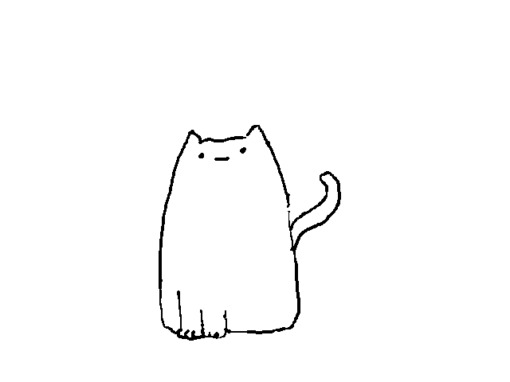
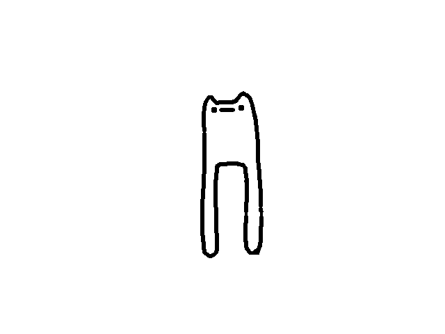
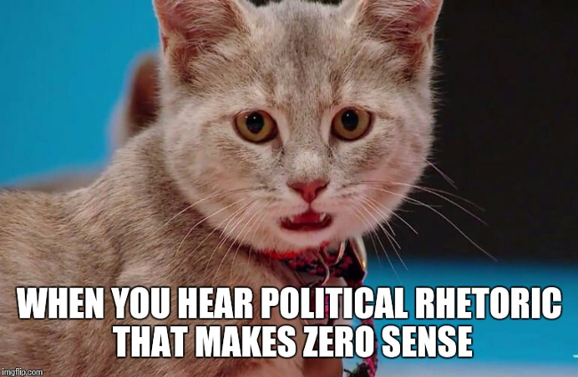
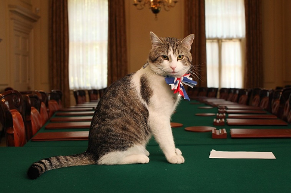
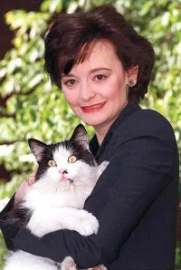

收录于合集 #趣味国关 2个

如果把猫作为一个观察视角来看这个世界，国际政治会发生什么变化？我们通过从全球治理、国家政治、动物保护等角度来重现当时政治舞台的现实场景，并思考了传统国际关系理论是否仍然是有效的。《猫猫与国际关系》是“有趣的国际关系”系列项目的一部分，本文是第一阶段内容的节选。

猫猫与国际关系
1.猫狗世界大战：谁才是宠物界No. 1
2.巫术、瘟疫与猫猫
3.英国第一猫 ****
本期编委
【策划】 金磊
【作者】 刘潇昱 王馨翊 董骁天 贺凡熙 金琳
【校对】 吴天麟
【审核】 张曼娜
【排版】 高佳美
【美编】 黄竹音
猫猫与国际关系

内容提要
01
猫狗世界大战：谁才是宠物界No.1
作者 | 王馨翊
爱猫党和爱狗党总是相争不下。有趣的是，来自市场研究公司Euromonitor的数据表明，这种差异不仅限于个人喜好，还涉及到地缘政治的领域——事实证明，有些国家或地区偏好猫，有些则更偏好狗。南美洲的国家和大部分亚洲国家都更爱狗，而大部分西欧国家、中东国家和一部分非洲国家则非常偏爱猫【1】。
第一个导致差异的因素和宠物的特性相关——相比喜欢到处撒欢的狗狗，猫更“小巧”，同样的空间可以容纳更多的猫咪。这一定程度上解释了为什么在美国拥有狗的家庭多于拥有猫的家庭，然而就总量而言，宠物猫却比宠物狗多了200万只左右（根据美国兽医医学协会的估计，猫的数量接近400万）。猫小巧的特性也导致它们在人口密集的地区更受欢迎，在美国中西部北部和东北部的州，宠物猫的数量更多，而南部和西南部的州有更多的宠物狗【2】。
第二个原因和文化背景有关。狗在南美国家的文化中长久以来都是家庭生活的一个重要组成部分，但一些伊斯兰教派却认为人们不应该饲养（不具备守卫、打猎之类用途）的宠物狗【3】。猫在很多文化中被赋予了极为神圣的概念。埃及神话中包括了芭丝特（Bastet）、玛弗德特（Mafdet）、塞赫麦特（Sekhmet）在内诸多猫首人身的守护神，猫更是在亡灵书中（Book of the Dead）被描绘为太阳神拉（Ra）在人间的使者【4】。作为穆罕穆德的爱宠，爱干净的猫猫在伊斯兰教中同样被赋予了特殊的地位，这导致了中东和北非国家长久以来对猫的偏爱【5】。
另外，学者们很关心的一点是，爱猫党和爱狗党是否形成了某种意义上的文化共同体（community），以及是否在这种族群中产生了一些行为规范（norm）。Stanley Coren教授的研究发现，养狗的美国人比不养狗的美国人政治立场更为保守。在过去的四次大选中，养狗最多的十个州至少八个都更倾向于投票给共和党；而养狗最少的十个州中每届大选中均只有一个倾向于共和党。除了地区因素之外，Coren教授推测养狗人士的社会地位更高也可能有一定影响，因为社会支配权（social dominance）通常和保守主义思想有紧密联系。
Coren教授发现在爱猫人士中并不存在类似的现象——过去几年的投票数据表明，是否养猫对于“铲屎官”们的政治倾向似乎没有显著影响【6】。Coren教授调侃称可能是因为猫猫本来就不是一种很容易预测的生物。不过，也许猫主子本猫们并不同意这个观点~

（图片来源：https://imgflip.com/i/1rtpfo）
02
巫术、瘟疫与猫猫
作者 | 董骁天 贺凡熙 金琳
当一众网友甘愿沦为“铲屎官”，聚众云吸猫大呼过瘾之时，虐猫新闻的层出不穷也令人愤愤不平。但实际上，人类与猫咪的历史一直是一部相爱相杀史。大约在12世纪，欧洲人将猫咪的各种习性与巫术联系在一起，也因此猫咪成为猎巫运动的主要对象。由于猫咪身体娇软、叫声软绵，因此人们常常由猫联想到女性，而在欧洲中世纪的文学中不乏有对阴险毒辣的女人幻变成猫咪的描述，或者猫咪在魔鬼附身下变成女人的故事。在猎巫运动中，猫咪与女性的命运紧密相连，猫咪和女性一道被视为情欲、诱惑、鬼魅的象征。罗马教皇格里高利九世为了回应整个欧洲不断增多的异端报告，发布了教皇诏书《罗马之声》（Vox in Rama）谴责黑猫是撒旦的化身。并且由于黑猫毛色特殊，首当其冲的受到残害，此后猫咪不分花色被批量屠杀【7】。
在新教国家英格兰1563年颁布的《巫术法案》中，养猫被视作“邪恶的行为”，谁家有猫谁就是女巫，女巫狩猎同屠猫运动一并成为大众的狂欢。比利时的抛猫节、中世纪德国的忏悔节都包含虐猫情节。15-18世纪，无数女性被指控使用巫术。人们认为女巫会变成猫，杀死婴儿和儿童，因此将猫和女巫一同处死【8】。由于黑猫被描述为邪恶仪式中的重要道具，加之民众的愚昧无知，基督教世界开展了长达数百年的猫类屠杀，甚至同情猫的人也会受到牵连和迫害。
除巫术外，猫咪还被认为与1348年欧洲爆发的黑死病密切相关。在黑死病肆虐的时代，由于医学知识的匮乏和对猫的宗教污名使得人们认为猫是瘟疫的传播者。如果窗外出现一只正在窥伺的猫，就证明瘟神即将降临这个家庭，而赶走瘟神的最佳办法就是立刻杀死这只猫。无独有偶，在疫情爆发初期，相关社区负责人仅仅是因为怀疑猫咪能够传播病毒，就将其活埋。从“吃蝙蝠”的武汉人、到“病原体”的武汉人，再到外国人眼中“肮脏的”中国人，在灾难面前，这类简单的归因和污名从未停止，正如《乌合之众》中所说：“人一到群体中，智商就严重降低，为了获得认同，个体愿意抛弃是非，用智商去换取那份让人倍感安全的归属感【9】。”当人类集体安全受到传染病的威胁时，由于信息的不对称以及对于新型传染病的不了解，人类开始为自己的遭遇寻找发泄的对象，虽然猫咪本身并不会传染给人类鼠疫或是新冠肺炎，但是成为发泄口的猫咪难以逃脱人类的意志。瘟疫的解决不可能依靠对于猫咪的发泄，寻求应对之法才是正道，鼠疫在全世界的数次流行让人们意识到此类传染病的防治尽一国之力是不能实现的。为了收集世界各地的信息，建立隔离和检疫措施，1851年7月23日，来自欧洲12个国家政府的医生和外交家齐聚法国巴黎，召开世界公共卫生史上第一届国际卫生大会，围绕保护各国的商业利益、传染性疾病国际传播的限制和预防、信息的共享、控制鼠疫、霍乱和黄热病的国际检疫法规等开始了长达6个月的跨年度讨论。
1907年12月9日，比利时、巴西、埃及、法国、意大利、荷兰、葡萄牙、俄罗斯、西班牙、瑞士、英国和美国等12国代表共同签署了《罗马协定》，正式批准组建“国际公共卫生办公室”，总部设在巴黎，这是世界上“第一个非区域性的国际卫生组织”，主要负责国际卫生公约的执行，采用流行病学监测、疾病报告和通讯技术等现代科技措施，向会员国传播对公众健康具有重要意义的信息，帮助国际社会完善检疫和隔离制度。2020年是新冠肺炎疫情元年，这一场世界性的瘟疫考验着人类的合作能力，但世卫组织等相关国际组织的领导并没有使国家团结一心对抗疫情，因此疫情仍在全球蔓延。在一些民众甩锅给猫咪的同时，国家之间也在互相推诿责任，如何阻止新冠疫情的全球肆虐，全球卫生治理仍任重道远。
03
英国第一猫
作者 | 刘潇昱近期，随着毕业季的来临，许多应届毕业生选择走上公务员道路作为自己的职业选择。殊不知，公务员队伍中也有来自喵星的“卧底”，这些猫猫不需要通过统一的考试就能跟随首相一路“平步青云”，它们就是英国第一猫，同时它们有一个正式的官职——内阁办公厅首席捕鼠大臣（Chief Mouser to the Cabinet Office）。
**
**
【捕鼠官的诞生】
英国这一在官邸养猫的传统最早可以追溯至亨利八世时期，财政部或者唐宁街会赡养一只猫作为部署家猫，当时的沃尔西枢机主教在行使其大法官职责时就常常将自己的猫带在身旁。到了1924年，当时的首相官邸已经是一栋有着近5个世纪历史的宅邸，最令首相头疼的便是房子内鼠患成灾的问题，于是时任首相麦克唐纳便把“比尔”带入了唐宁街10号，第一位捕鼠官就此诞生。1929年，唐宁街10号正式设立这一职位，财政部的官员授权管家“从零用现金中每日抽出1便士以抚养一只高效的捕鼠猫”【10】。
【历任捕鼠官】
至今一共有13位捕鼠官曾为首相服务（见图一），但是它们并不一定属于在任首相，事实上，捕鼠官的任期有时候比首相还长。在唐宁街任期最长的猫为韦伯福，曾任职18年，服务过4任首相。其继任者韩福瑞则是一只被撒切尔收养的流浪猫，他的名字取自当时十分火爆的英国政治喜剧《是，首相》中内阁秘书的名字，而且韩福瑞当时的“年薪”已高达100英镑，这也可见撒切尔对这只猫的喜爱。韩福瑞在任将近10年，最后因身体原因“光荣退休”，之后唐宁街10号在经历一届捕鼠官后进入了短暂的空窗期。直到2011年1月，独立电视新闻报道，“（有老鼠）在一次电视新闻报导过程中两次疾行穿过唐宁街10号的阶梯”。不久后，一只名叫“拉里”的猫入驻唐宁街，此猫由卡梅伦及其家人选中，来自巴特西猫狗之家，于是自2011年2月15日起，这一职位一直由拉里担任【11】。
图一：历任捕鼠官一览
(图片来源：https://en.wikipedia.org/wiki/Chief_Mouser_to_the_Cabinet_Office#:~:text=The%20Chief%20Mouser%20to%20the,date%20only%20to%20the%201920s.)
【捕鼠官与首相】 值得一提的是，作为离首相最近也是离镁光灯最近的猫，捕鼠官与首相们的轶事成为了人们津津乐道的话题。大部分捕鼠官都与首相相处融洽，例如撒切尔夫人就曾专门为时任捕鼠官韦博福购买了沙丁鱼罐头，在韦博福进入府邸之前，门外的警察都需要专门为它敲门，这一传统也一直延续至今。而有些时候，政治人物也面临着捕鼠官带来的舆论风波。布莱尔刚上台后就有消息传出布莱尔一家与时任捕鼠官韩福瑞不和。这极大影响了民众对于新首相的印象，民众认为如果一名首相连一只猫都不喜欢的话，那他又谈何亲民呢。于是乎，官方还特意放出了韩福瑞与首相夫人的合照以平息人们的不满（见图二）。
图二：布莱尔夫人与韩福瑞
类似的事情也发生在了卡梅伦的身上，卡梅伦曾经因为拉里的“擅离职守”而公开表示将要开除拉里，甚至替换上了时任财政大臣的爱猫弗雷亚。媒体认为这是卡梅伦与拉里不和的佐证，为此卡梅伦在他辞职前的最后一次首相质询中，专门挥舞出一张拉里蜷缩在他大腿上的照片，驳斥了他和拉里不合拍的传言。实际上拉里不仅是由卡梅伦决定收养，而且卡梅伦还曾带它同奥巴马会面，可谓是“风光无限”（见图三）。他卸任前也遗憾地表示，因为拉里属于唐宁街10号，所以没办法带它一起“卸任”。
图三：拉里与奥巴马和卡梅伦
在鲍里斯·约翰逊刚刚上任时，BBC曾经发表一篇题为“新首相的第一件事：制服拉里”的新闻，足可见这能够让多位首相“竞折腰”的“英国第一猫”所拥有的权力和影响力，这或许才是真正的“猫生赢家”。这些捕鼠官原本也是普通的宠物猫或者流浪猫，但当它们“身居要职”，自由进出于首相府邸时，它们的身份和行为所蕴含意义已经发生了极大的变化。这个时候它们已经不再单单是一只猫或一只宠物，它们成为了民众们检验政治家亲民属性的试金石，成为了政治人物们塑造自己“普通人”身份的公关手段。这也解释了为什么宠物的身影越来越多地出现在政治人物身边，这些宠物的背后其实也蕴含了政治家们精心的政治考量。
下期预告
1.援助猫猫——抗疫援助的国家形象建构
2.猫狗外交：作为国礼的和平使者
3.“推特治喵”
4.猫与法老：猫的偶像化和猫猫神话
5.猫猫文明进化论
6.猫猫与选举政治
参考文献
[1]Ferdman, Roberto A. and Christopher Ingraham. 2014. Where cats are more popular than dogs in the U.S. — and all over the world. https://www.washingtonpost.com/news/wonk/wp/2014/07/28/where-cats-are-more- popular-than-dogs-in-the-u-s-and-all-over-the-world/. 访问时间2020年7月29日。
[2]Ibid.
[3] Animals in Islam. https://en.wikipedia.org/wiki/Animals_in_Islam. 访问时间2020年7 月29日。
[4] Cats in Ancient Egypt. https://en.wikipedia.org/wiki/Cats_in_ancient_Egypt. 访问时间2020年7月29日。
[5] Islam and Cats. https://en.wikipedia.org/wiki/Islam_and_cats. 访问时间2020年7月29日。
[6]Coren, Stanley. 2019. Dog Ownership Predicts Voting Behavior—Cats Do Not. https://www.psychologytoday.com/us/blog/canine-corner/201908/dog-ownership- predicts-voting-behavior-cats-do-not. 访问时间2020年7月29日。
[7]Joshua J. Mark. 2019. Cats in the Middle Ages. https://www.ancient.eu/article/1387/cats-in-the-middle-ages/. 访问时间2020年7月30日。
[8]Faye Sakellaridis. 2018. Cats and Witches: A Magical History. https://wisdom.thealchemistskitchen.com/cats-and-witches-a-magical-history/. 访问时间2020年7月30日。
[9]古斯塔夫·勒庞著，戴光年译：《乌合之众：大众心理研究》，武汉：武汉出版社2012年版。
[10] Chief Mouser to the Cabinet Office. https://en.wikipedia.org/wiki/Chief_Mouser_to_the_Cabinet_Office. 访问时间2020年7月31日。
[11] Larry (cat ). https://en.wikipedia.org/wiki/Larry_(cat). 访问时间2020年7月31日。
文章观点不代表本平台观点，本平台评译分享的文章均出于专业学习之用, 不以任何盈利为目的，内容主要呈现对原文的介绍，原文内容请通过各高校购买的数据库自行下载
**
**
**
**
**
**
添加 “国小政”微信
获取最新资讯


国政学人
支持学术公益与知识传播
微信扫一扫赞赏作者 __赞赏
已喜欢，对作者说句悄悄话
取消 __
发送给作者
发送
最多40字，当前共字
上一页 1/3 下一页
长按二维码向我转账
支持学术公益与知识传播
受苹果公司新规定影响，微信 iOS 版的赞赏功能被关闭，可通过二维码转账支持公众号。